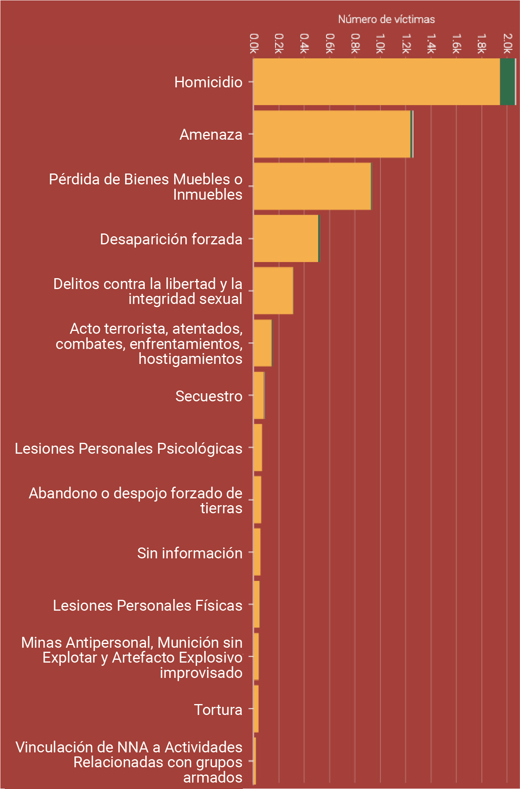

Número de víctimas por pueblo étnico (afrocolombia, palenquero y raizal) de acuerdo al hecho victimizante sufrido
Esta gráfica representa el número de personas pertenecientes a los pueblos étnicos afrocolombiano, palenquero y raizal que han sufrido hechos victimizantes, cifras distribuidas según el tipo de hecho.
Número de víctimas del pueblo étnico afrocolombiano de acuerdo al hecho victimizante sufrido
El pueblo afrodescendiente es el más victimizado entre los 3 pueblos descritos, especialmente porque son los de mayor cantidad de personas.
Número de víctimas del pueblo étnico palenquero de acuerdo al hecho victimizante sufrido
¿Notaste que hay un aumento en el hecho victimizante “secuestro” para las comunidades palenqueras con respecto a las afrocolombianas y raizales?
Número de víctimas del pueblo étnico raizal de San Andrés de acuerdo al hecho victimizante sufrido
Cuando hablamos del conflicto armado interno pocas veces se menciona lo que sucede en nuestras islas. ¿Relacionas esta realidad con otros aspectos relacionados a San Andrés y Providencia?
Número de víctimas del pueblo étnico raizal de San Andrés de acuerdo al hecho victimizante sufrido
Número de víctimas por pueblo étnico (afrocolombia, palenquero y raizal) de acuerdo al hecho victimizante sufrido (excluyendo desplazamiento forzado)